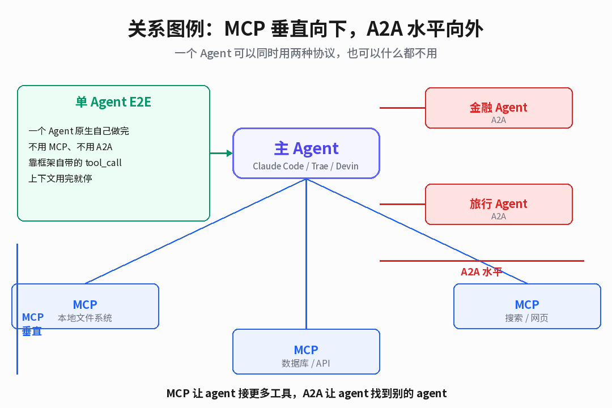
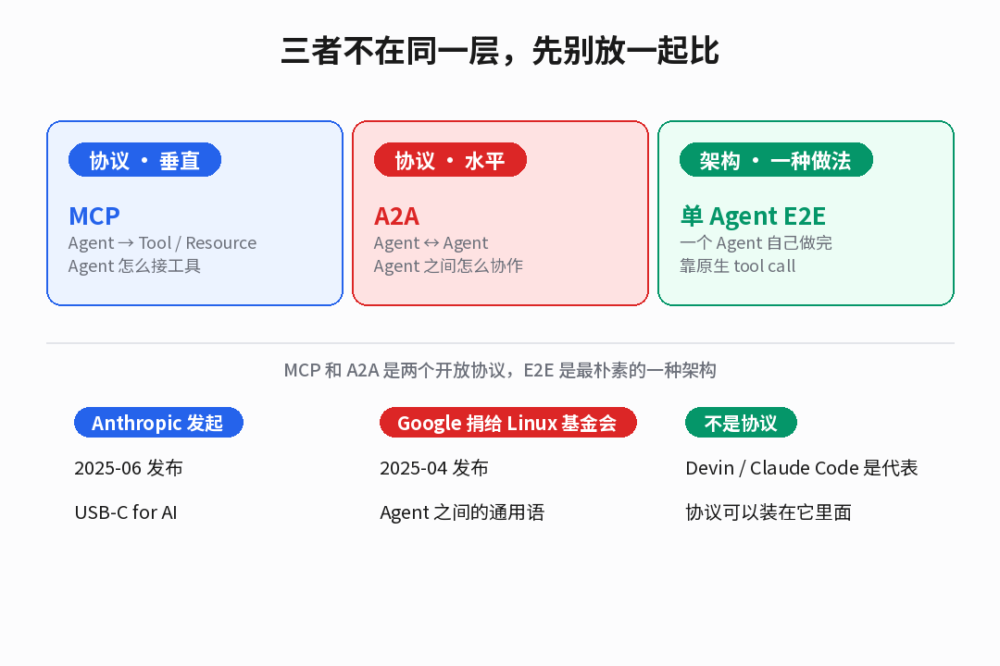
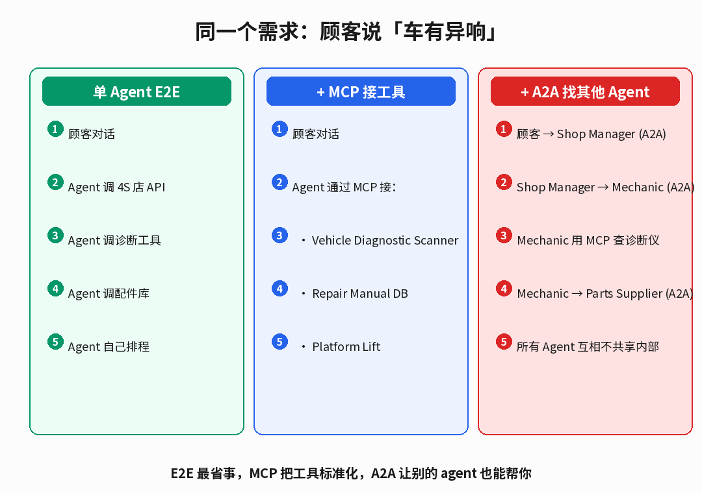
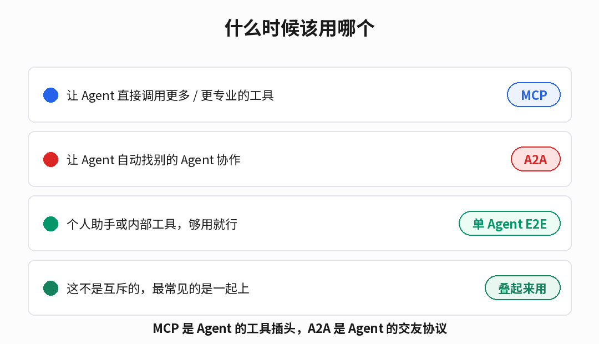

MCP 往下接工具，A2A 往外找别的 Agent，单 Agent E2E 是什么都不用自己扛。
最近两个月，MCP 和 A2A 这两个名字在 AI Agent 圈里爆得快。
一个 Anthropic 发起，一个 Google 捐给了 Linux 基金会，都拿 Apache / MIT。朋友圈里有人在比谁是正统 Agent 协议，有人说其实两者是互补的。我自己在用 Agent 的时候，还发现另一个没人提但天天在用的东西，单 Agent 端到端，或者说单 Agent E2E。
这三个摆在一起比的时候，最容易犯的错是放错层级。我自己一开始就犯了。
MCP 和 A2A 是两个协议，单 Agent E2E 是一种架构。协议可以装在架构里面。
01
先把三层放对位置

两个是开放协议，一个是最朴素的做法。
第一件事，MCP，Model Context Protocol。2025 年 6 月 Anthropic 放出来的一个开放协议，把 AI 应用连外部工具这件事标准化。它自己的官方类比我觉得是到位的，USB-C for AI。
第二件事，A2A，Agent to Agent Protocol。Google 发起，已经捐给了 Linux 基金会，技术委员会里有 AWS、Cisco、Google、IBM Research、Microsoft、Salesforce、SAP、ServiceNow 这些。它要解决的是另一件事，Agent 和 Agent 之间怎么互相对话。
第三件事，单 Agent E2E。这个没有统一的协议规范，它就是一种最朴素的做法，一个 Agent 从接到任务开始到结束，全靠自己框架自带的 tool_call 能力往外调，不跟外部别的 Agent 说话。Devin、Claude Code、Trae 里大多数 Agent 一开始都长这样。
MCP 解决 Agent 怎么接工具，A2A 解决 Agent 怎么找别的 Agent。E2E 是什么都不用的情况。
02
MCP：Agent 的工具插头
MCP 的架构很清楚。Host 是 AI 应用本身，比如 Claude Desktop 或者 VS Code。Client 是 Host 为每个 Server 开的一个连接对象。Server 是真正干活的那个东西，可以是本地的、STDIO 跑的，也可以是远程的、走 Streamable HTTP 的。
Server 对外暴露三种东西，tools、resources、prompts。tool 是能执行的动作，resource 是能读的东西，prompt 是一段预置的提示词。
举个最简单的例子，做一个 Node CLI 工具给 Agent 当文件系统：
npx @modelcontextprotocol/server-filesystem /path/to/dir
然后在 Agent 里配一下就行。Claude Desktop 是改它的 settings.json，Cursor 和 VS Code 有各自的接入点。连上之后，这个 Agent 就突然能读这个目录、写这个目录、甚至知道这个目录下有什么。
官方给了很多现成的 MCP Server，filesystem、GitHub、Postgres、Notion、Figma、Linear、Slack……数都数不过来。写一个自己的也不难，Python SDK 和 Node SDK 都有。
MCP 是垂直的。每接一个 MCP Server，Agent 就多一份力气。
03
A2A：Agent 之间说什么话
A2A 要解决的是另一个方向。一个 Agent 已经很能打了，但遇到它的能力边界怎么办？让它跟另一个 Agent 说话。
A2A 里有两个角色，Client Agent 和 Server Agent。Agent Card 是 Agent 对外发布的名片，里面有这个 Agent 能干什么、能处理什么任务类型、有哪些能力。User（也就是发起方）用 Agent Card 找到合适的 Server Agent，然后开一个 Task，传一段 Message，Server Agent 返回 Task 状态，一直到 completed、failed、canceled 这些终结状态。
官方给了 Python SDK，写一个 A2A Server Agent 大概这么几行：
from a2a.server.agent import Agent
from a2a.server.execution import run_sync
agent = Agent(
name="research-agent",
description="查找论文并总结",
)
@agent.on_message
def handle(message):
return {"text": "已找到 3 篇相关论文"}
run_sync(agent, host="0.0.0.0", port=8000)
重点在，Server Agent 内部你可以用任何你喜欢的框架，LangGraph、CrewAI、Semantic Kernel、自研都行。A2A 只管 Agent 和 Agent 之间这层通信。
它还特意说明了自己不是什么。不是一个开发 Agent 的框架，不是子 Agent 协议，不是 MCP 的替代品，也不是 Slack 那种消息 App。它就是 Agent 和 Agent 之间那层专门的协议。
A2A 是水平的。Agent 之间找得到对方，互相能对话，不暴露内部。
04
单 Agent E2E：一个人扛到底
前两个都在协议层。单 Agent E2E 不一样，它就是一种最朴素的做法。
它的特征很简单。一个主 Agent 接到一个任务，用自己框架里原生的 tool_call 能力往外调工具，调完了再接着想，整个过程里它是单线程的，它不跟别的 Agent 说话，上下文用完了它就停下来。
Devin 是这个模式最典型的例子，一张工单进去，一个 Agent 负责读完代码、改代码、跑测试、提 PR，整个过程就是它自己在那转。Claude Code、Trae 里的大多数 Agent 也是这个模式，Trae 会给它加 terminal、editor、browser 这些环境，但执行主 Agent 还是一个。
一个典型的单 Agent E2E 任务，Trae 里就这么跑：
你：帮我加一个暗黑模式，改到一半我觉得颜色不对，回头换
Trae Agent：
→ 读项目代码（tool: Read / Glob）
→ 改 CSS 变量（tool: Edit）
→ 改 Toggle 组件（tool: Edit）
→ 跑一下 dev server（tool: RunCommand）
→ 截图给你（tool: browser_use）
这种模式最省事，你不用配协议，不用管 Agent 和 Agent 之间怎么握手，上手就能用。代价也明显，这个 Agent 再强，它不会自己找外部帮手，上下文撑爆了它就停下来。
但注意了。单 Agent E2E 不是跟 MCP 和 A2A 互斥的。最常见的做法反而是，让这个主 Agent 用 MCP 接一堆专业工具，需要的时候再通过 A2A 找外部 Agent。协议可以叠在架构里面。
05
同一个需求，三种走法
拿一个真实例子对比最直接。A2A 官网用了一个修车店的例子，我拿来拆成三层给你看。

同一个"车有异响"需求，E2E 自己扛、MCP 接工具、A2A 找帮手。
单 Agent E2E 做法，就是写一个 Agent，在它自己的 prompt 里把所有事都塞进去，它自己能调诊断 API、自己能查配件库、自己能排维修工单。能跑，但所有能力都绑死在这一个 Agent 身上，要加个新工具还得改它的 prompt。
加 MCP 之后，Agent 的诊断能力、配件能力、查手册能力都变成了标准化的 MCP Server。你加一个新工具，不是改 Agent，是加一个 Server。Agent 自动就能调用。
再加 A2A，Shop Manager Agent 就不用自己扛所有事了。它可以把诊断任务派给 Mechanic Agent，把找配件的事派给 Parts Supplier Agent。每个 Agent 内部用自己的工具（可能是 MCP 接的，可能是自己原生的），Agent 之间的边界由 A2A 守住。
MCP 让 Agent 有更多力气，A2A 让 Agent 有更多帮手。
06
三个放在一起该怎么选
先把几个最容易混的关系拍清楚。

三个不是互斥项，大多数情况是叠起来。
MCP 不是 A2A 的替代品。MCP 管 Agent 调工具，A2A 管 Agent 找 Agent。一个 Agent 可以同时用 MCP 和 A2A，A2A 的协议规范里甚至明确鼓励这种叠加方式。
一个 MCP Server 能不能同时当 A2A Agent 用？官方的回答是可以在某些情况下互相暴露。一个 well-defined、无状态的 MCP tool 可以被包装成 A2A 的 task。但反过来，A2A Agent 的长对话状态没法用 MCP tool 覆盖，MCP tool 天生就更像一个函数调用。
单 Agent E2E 也不是 MCP/A2A 的对立面。相反，在 90% 的场景里，你会先写一个单 Agent E2E，然后给它挂 MCP 接工具，再需要的时候挂 A2A 找外部 Agent。
三个决策点。你的 Agent 需不需要调用更多或更专业的工具？需要，上 MCP。你的 Agent 需不需要自动找外部 Agent 协作？需要，上 A2A。以上都不用，单 Agent E2E 就够了。
07
协议不是互斥，是叠层
回头看最近这一年的 Agent 生态，会发现它在做的一件事特别像。把原本绑在各家 Agent 框架里的东西，一点点往外剥，剥成开放的协议。
MCP 剥的是 Agent 和工具这一层。以前每个 Agent 框架都有自己的 tool 规范，LangChain 一套、CrewAI 一套、自研又一套。现在这一层有了一个统一协议。
A2A 剥的是 Agent 和 Agent 这一层。以前多 Agent 协作全是框架内部的事情，LangGraph 的节点、CrewAI 的 role、自研的流程引擎。现在这一层也有了一个跨框架的协议。
剥完之后留下的是什么？就是一个最简单的单 Agent。它可以什么协议都不用，自己干活；也可以往下挂 MCP 拿工具，也可以往外挂 A2A 找帮手。
这三个东西放在一起，其实就是三层。最底下那层是你最熟悉的主 Agent，中间层是 MCP，最顶上是 A2A。
协议不是互斥选项。它们是叠在 Agent 身上的插头。
MCP 刚出来的时候有人说它会替代 A2A，A2A 刚出来的时候有人说 MCP 不够，得靠 A2A 才是未来。其实都不是。它们一个接工具、一个找 Agent，本身就不是一个维度的事。
把这三个摆在一起看完，我对 Agent 这个东西的一个感受反倒是，最朴素的那个单 Agent E2E 依然是最常用的。协议让它有了翅膀，但翅膀可以不装。
先用好自己，再往下接 MCP，再往外找 A2A。
MCP · MIT | A2A · Apache 2.0
MCP 资料取自 modelcontextprotocol.io 官方文档；A2A 资料取自 a2a-protocol.org 官方文档与 GitHub README；两者协议互补点均有官方明确说明。